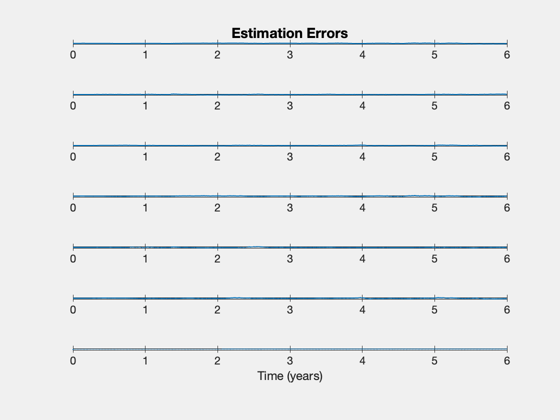
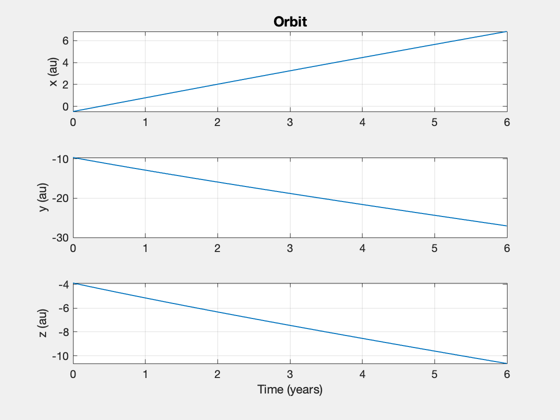
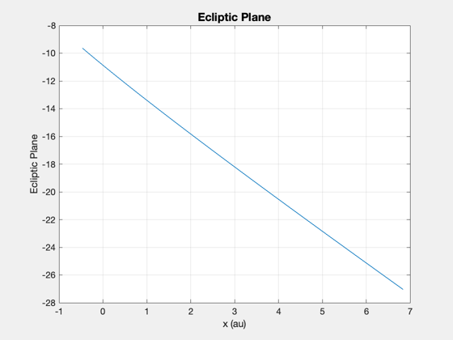

Demonstrate orbit estimation using a UKF and planet centroid data.
The spacecraft can be in the Messenger or New Horizons orbits. Uses the Hipparcos catalog.
Since version 9. ------------------------------------------------------------------------- See also RaDec2U, Constant, Plot2D, TimeLabl, RK4, NavTargetTrackingPlanetary, OpticalNavPlanetStar, OpticalNavPlanetStarNoiseMatrix, LoadCatalog, UKF, Planets -------------------------------------------------------------------------
Contents
- Constants
- Select a mission
- Select the filter
- Measurement options
- Simulation parameters
- Allocate memory for plotting
- Earth gravitational parameter
- Star Catalog
- Position and velocity uncertainty
- Measurement noise
- State estimate at start
- Covariance based on the uncertainty
- Initialize the time display
- Create a time sequence for the x-axis
- Plot
%-------------------------------------------------------------------------- % Copyright 2009-2010 Princeton Satellite Systems, Inc. % All rights reserved. %-------------------------------------------------------------------------- clear g; clear d; clear noise;
Constants
%---------- au = Constant('au'); years = 6; planet = Planets('rad',1:9); pixel = 10e-3; % mm fL = 200; % mm centroiding = 0.1; % pixel
Select a mission
%------------------ mission = 'messenger'; mission = 'new horizons'; switch mission case 'messenger' x = [-5.102050761318097E+07; -3.914630171469574E+07; -1.563888544075625E+07;... 2.159852087150890E+01; -3.063444535492430E+01; -1.827429443660471E+01]; jD0 = 2455755.50; case 'new horizons' x = [-6.983445814653811E+07; -1.441036100591167E+09; -5.821377265514169E+08;... 5.922525925977417E+00; -1.594089850539337E+01; -6.215007577164026E+00]; jD0 = 2454660.5; end
Select the filter
%------------------ filter = @UKF; % Full covariance matrix filter
Measurement options
%--------------------
g.fOV = 8.8*pi/180;
Simulation parameters
%---------------------- nSim = years*24*365; dT = 3600; % sec tEnd = nSim*dT;
Allocate memory for plotting
%-----------------------------
xP = zeros(13,nSim);
Earth gravitational parameter
%---------------------------- mu = Constant('mu sun');
Star Catalog
%------------- starCatalog = LoadCatalog( 'Hipparcos', 7 ); g.uSCatalog = RaDec2U( starCatalog.rA, starCatalog.dec ); g.pCatalog = Planets('rad',1:9);
Position and velocity uncertainty
%---------------------------------- r1Sigma = 1; % km v1Sigma = 0.0001; % km/s
Measurement noise
%------------------ noise.angle = 10*0.0000048481368111; % 1 arcsecond in radians noise.planet = [1 1 1 1 100 600 1250 2250 2800]; noise.radius = [1 1 0.01 .1 6 6 7 19 6 140]; noise.pixelAngle = atan(centroiding*pixel/fL);
State estimate at start
%------------------------
d.x = x + [r1Sigma*randn(3,1);v1Sigma*randn(3,1)];
d.x = x;
Covariance based on the uncertainty
%------------------------------------ d.p = diag([r1Sigma^2*ones(1,3) v1Sigma^2*ones(1,3)]); d.int ='RK4'; d.rHSFun ='RHSOrbitUKF'; d.measFun ='OpticalNavPlanetStar'; d.integrator = @RK4; d.alpha = 0.8e-3; % UKF spread of sigma points d.kappa = 0; % UKF weighting factor d.beta = 2; % UKF incorporation of a priori knowledge d.dT = dT; d.rHSFunData = struct('mu',mu,'a',[0;0;0]); vecP = [0 0 0 1e-6 1e-6 1e-6]'; d.rP = diag(vecP.^2); % Plant noise covariance d = filter('initialize', d ); t = 0; g.planet = planet; g.trackPlanet = 1; g.trackCount = 0; g.trackCountMax = 10; g.kP = 0;
Initialize the time display
%---------------------------- TimeDisplay( 'initialize', 'Optical Navigation Sim', nSim ) for k = 1:nSim % Display the status message %--------------------------- TimeDisplay( 'update' ); % Plotting %--------- xP(:,k) = [d.x; x; g.kP]; % Update the RHS %--------------- x = RK4( d.rHSFun, x, dT, t, d.rHSFunData ); t = t + dT; % Measurements %------------- g.jD = jD0 + t/86400; g.mode = 'polar star'; g = NavTargetTrackingPlanetary( x, g ); y = OpticalNavPlanetStar( x, g, noise ); % Kalman Filter %-------------- d.measFunData = g; [d.dY, d.rM] = OpticalNavPlanetStarNoiseMatrix( g, x(1:3), noise ); d.t = t; d = filter( 'update', d, y ); end TimeDisplay( 'close' );
Create a time sequence for the x-axis
%--------------------------------------
[t,tL] = TimeLabl((0:(nSim-1))*dT);
Plot
%----- err = xP(1:6,:) - xP(7:12,:); yL = {'x (km)' 'y (km)' 'z (km)' 'v_x (km/s)' 'v_y (km/s)' 'v_z (km/s)', 'Planet id'}; Plot2D( t, [err;xP(13,:)], tL, yL, 'Estimation Errors' ); Plot2D( t, xP(7:9,:)/au, tL, {'x (au)' 'y (au)' 'z (au)'}, 'Orbit' ); Plot2D( xP(7,:)/au, xP(8,:)/au, {'x (au)', 'y (au)'}, 'Ecliptic Plane') rng = floor(0.75*nSim):nSim; err = err(:,rng); meanSquareError = mean(sqrt(err.^2),2) %-------------------------------------- % PSS internal file version information %-------------------------------------- % $Date$ % $Id: 253d1ef40e27fff0bdaf03f7049a6763a13c4d86 $
meanSquareError =
3582.1
2045.9
2810.3
0.00018279
7.9307e-05
0.00021626
  